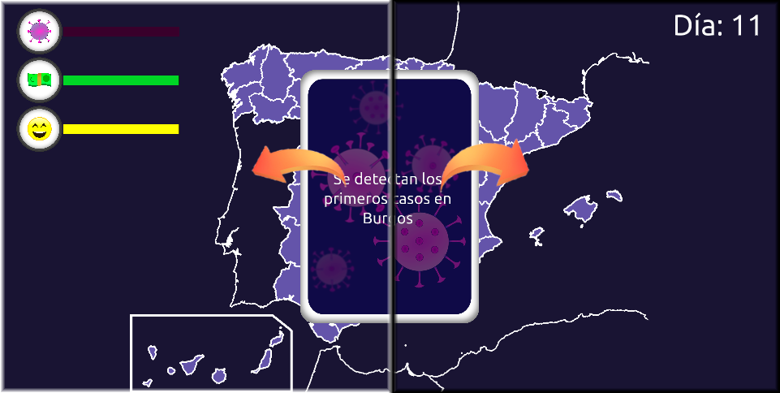
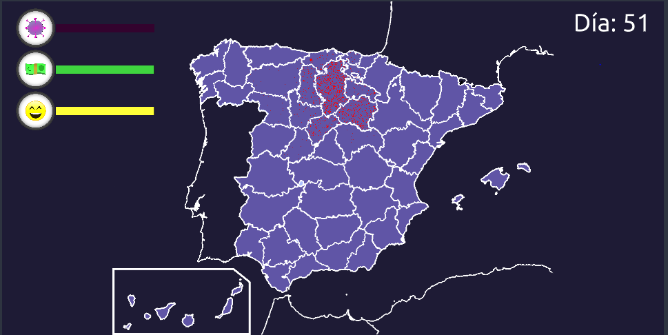

Descripción
EN EL ESTADO ACTUAL EL SIMULADOR NO ESTÁ BALANCEADO POR FALTA DE TIEMPO
El simulador no se encuentra en un estado en el que represente correctamente la situación. Para ello necesitan ser balanceadas las causas y consecuencias
de las distintas opciones presentes. Todo el contenido del simulador se encuentra en esta versión por lo que actúa como prueba de concepto.
Para la mejora del 25 se intentará que esté completamente balanceado. Gracias por entenderlo.
Este es un proyecto en el que hemos intentado mostrar la dificultad de las medidas que se tienen que tomar cuando se está en el
gobierno durante una pandemia.
Obviamente, por falta de tiempo no hemos conseguido hacer la simulación muy realista. Aun así, creemos que consigue en hasta cierto
punto transmitir la sensación mencionada anteriormente.
Se puede considerar como una prueba de concepto, así que si teneis alguna idea para el proyecto nos gustaría que nos los comunicáseis
(para más información ver apartado "Mecánicas que nos gustaría añadir")
Instrucciones
- ¿Cómo se gana? para poder ganar la partida tienes que conseguir que haya el menor número de contagios posibles teniendo en cuenta
la economía del país y la felicidad de la población. Además, tienes que llegar a conseguir la vacuna.
- ¿Cómo se pierde? Si la barra de economía llega a 0 o la barra de contagios llega al máximo ...
Controles
Al cargar la página te encontrarás con un mapa de España político dividio en provincias. Y en la esquna superior izquierda tres
barras.

Esta es la barra de contagios. A medida que va pasando el tiempo irán aumentando los contagios. Tendrás que ir tomando
medidas para poder controlar los contagios, pero ten cuidado y no llegues al 100% de infectados o perderás.

Esta es la barra de economía, donde está todo el presupuesto que tienes para poder superar esta pandemia, a medida
que vas tomando medidas conseguirás o perderás dinero. Intenta no llegar a 0 o perderás.

Esta es la barra de felicidad. Esta aumentará o disminuirá dependiendo de las medidas que vayas tomando a lo largo de la partida.
El nivel de felicidad de la población está diréctamente relaccionada con las probabilidades de que la población siga las medidas
impuestas. Por lo que se tiene que mantener a la población feliz para que las medidas tomadas sean efectivas.

Cada cierto tiempo irán apareciendo cartas con diferentes efectos, algunas reducen los contagios pero también reducirán la
economía y muchas veces la felicidad del pueblo. Otras subirán la felicidad del pueblo o la economía pero también aumentarán
los contagios. Es tu trabajo conseguir que estas tres variables estén balanceadas.
Para ello, cuando se presente una carta, tendrás que indicar si quieres aceptar o recharzar la propuesta. Para aceptarla
tendrás que arrastrar la carta hacia la izquierda. Para recharzarla tendrás que arrastrarla hacia la derecha.
Además, si se arrastra la carta hacia abajo todas las demás se ocultarán permitiendo ver el mapa. Para volver a mostrarlas solo hay que hacer click o arrastrar.

Debajo de la pantalla del juego hay una barra de opciones que permite regular el volumen del sonido, así como activarlo y
desactivarlo. Además, hay un control independiente que permite activar o desactivar la música.

Indicación de los contagios
A medida que vayan aumentando los contagios irán apareciendo puntitos rojos en el mapa, indicando el porcentaje de la
población que está infectada. Por lo que se tiene que evitar a toda costa que aumente la concentración de puntitos.

Vacuna
El objetivo final es consegur la vacuna. Esta estará siempre avanzando a un ritmo lento gracias a las investigaciones de otros paises
Si se quiere hacer que la investigación de la vacuna aumente más rápido se podrá invertir en investigacón a un costo de la economía
Cuando la vacuna ya está completamente desarrollada, se puede seleccionar a que grupo de población se quere vacunar. Cada grupo tiene sus
ventajas y desventajas.
Herramientas y tecnologías utilizadas
- IDE: Visual Studio Code
- Librería gráfica: p5.js
- Librería de sonido: p5.js.sound
- Lenguaje de programación principal: JavaScript
- Lenguaje de shaders: GLSL
La página, así como toda la decoración y estilos está creada desde cero con HTML y CSS
Así como prácticamente todos los elementos del simulador en JavaScript
Haz click aquí para acceder al código: código
Mecánicas que nos gustaría añadir
Estas son algunas mecánicas que nos gustaría añadir al proyecto. Si tienes alguna sugerencia enviánosla al correo diego.moralesr@edu.uah.es
La mayoría, si no todas las siguientes mecánicas serán implementadas para el día 25
- Añadir más precisión en el control de las mascarillas y los confinamientos (por edades, si están contagiados, etc.)
- Balancear las consecuencias de las elecciones
- Mejorar la simulacón
- Cambio de la escala de la barra de contagios. Lineal -> logarítmica
- Arreglar bugs. Si encontrais algún bug enviadlo al correo
- Implementación del icono de vacuna
- Implementación de los eventos